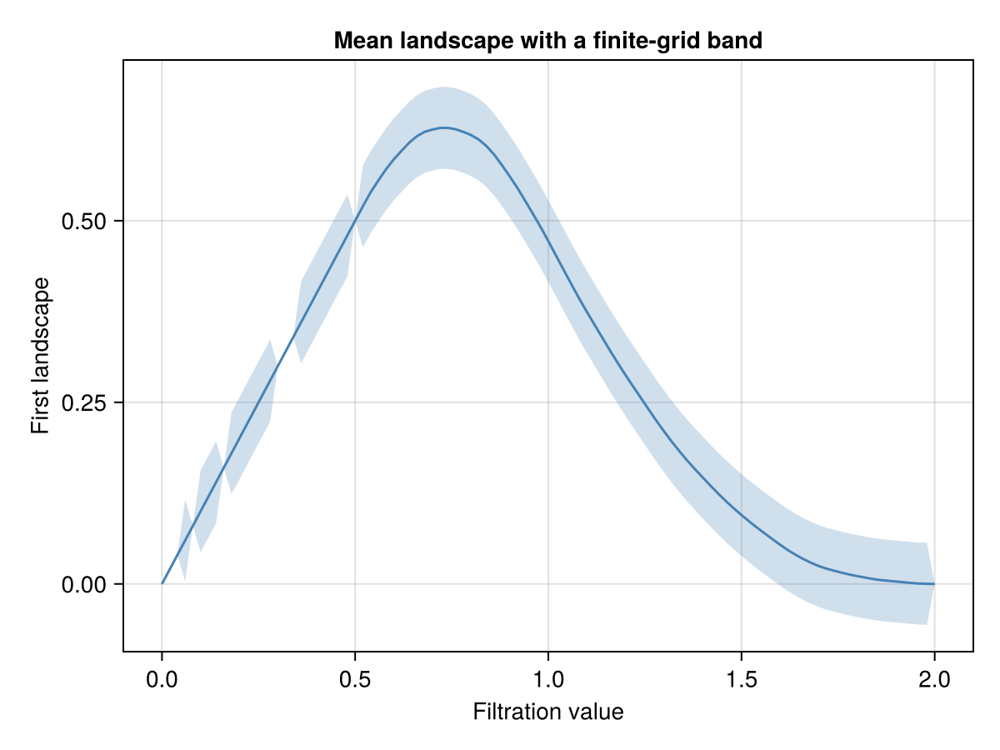

Inference, differentiable PH, descriptors and tuning
using JuliaTDA exposes the P1 APIs from the local ecosystem packages. Load optional AD/training packages only for differentiable workflows.
Mean-curve inference across independent diagrams
Each diagram below stands for one independent observation. Their finite bars have variable lifetimes, so their first landscapes vary. This synthetic sample illustrates the API; it is not a model of arbitrary experimental data.
using JuliaTDA, Random
using CairoMakie
rng = Xoshiro(42)
diagrams = [PersistenceDiagram([(0.0,1+rand(rng))];dim=1) for _ in 1:80]
band = confidence_band(diagrams;grid=range(0,2;length=101),rng=rng)
betti_band = confidence_band(diagrams;grid=band.grid,representation=:betti,rng=rng)
bandConfidenceBand(n=80, points=101, alpha=0.05, method=multiplier)figure = Figure()
axis = Axis(figure[1, 1]; xlabel = "Filtration value", ylabel = "First landscape",
title = "Mean landscape with a finite-grid band")
band!(axis, band.grid, band.lower, band.upper; color = (:steelblue, 0.25))
lines!(axis, band.grid, band.estimate; color = :steelblue)
figure
The band concerns the population mean, simultaneously at the supplied grid points. It is not a region that contains every individual's landscape or a confidence set for the diagram of one cloud. The estimate is the sample mean; coverage is asymptotic and depends on the sampling assumptions.
Explicit nulls and paired observations
null_test = max_persistence_significance(first(diagrams),rand(rng,199))
independence = independence_test(diagrams,reverse(diagrams);n_perm=199,rng=rng)
(maximum_test = null_test.pvalue, independence_test = independence.pvalue)(maximum_test = 0.005, independence_test = 0.305)Bands target the population mean on a fixed finite grid, with independent diagrams as observations. They are asymptotic. The maximum test needs an explicit, exchangeable global null; the toy Uniform maxima above illustrate the API and are not a scientific null for arbitrary data. HSIC permutes paired observations and requires a suitable kernel/sampling design. Full worked examples and seeded coverage/type-I calibration are in PersistenceInference.jl/examples/round2.jl and PersistenceInference.jl/validation/. The latter also compares every numeric statistic with an independent NumPy/SciPy implementation of published formulas.
In the independence example, row i in the two collections forms a pair. Reversing this generated sample is just a construction for demonstrating the call. In a study, pair by experimental unit and justify label permutations; do not treat bars within one diagram as independent observations.
Optional differentiable persistence
using Zygote
X = [0.0 1.0 1.23 0.11;0.0 0.07 1.1 1.02]
endpoints = differentiable_persistence(X)
gradient = Zygote.gradient(x -> topological_loss(x;target=0.7),X)[1]Differentiable PH supports finite Rips H0/H1 over F₂, Euclidean coordinates or dense symmetric distance matrices. Pairing changes/ties are nonsmooth. The optional Enzyme extension differentiates numeric endpoints with inactive pairing computation. Executed Flux and Lux training examples, finite-difference tests and setup instructions are in TDARipserer.jl/examples/differentiable/ and its differentiable-persistence manual.
The new descriptors are EulerCharacteristicCurve, PersistenceBlock, TropicalCoordinates, TentTemplate, ComplexPolynomial, TopologicalVector and Atol. PersistenceDescriptorVectorizer(kind=:tent) fits fixed shapes and training-only ranges/codebooks inside an MLJ pipeline. Stability statements depend on each descriptor: ECC is discontinuous at event times, high-degree complex coefficients can be ill-conditioned, and ATOL's smooth-measure guarantee is different from bottleneck stability. The diagram package's descriptor manual records the evaluated formulas and limits.
See Tuning a PH pipeline for a complete TunedModel persistence-image pipeline with nested stratified CV. tuning_ranges(pipeline) recursively supplies recommended PH/vectorizer ranges. Fit the full pipeline within every fold to avoid leaking diagram bounds, image grids or codebooks from validation data.
Reproducible performance/numeric checks live in TDAPersistenceDiagrams.jl/benchmarks/, TDAPersistenceDiagrams.jl/validation/, TDAmapper.jl/benchmarks/differentiable.jl and PersistenceInference.jl/validation/. Their scripts, seeds, sample counts, baseline CSVs and tolerances are documented alongside the code.